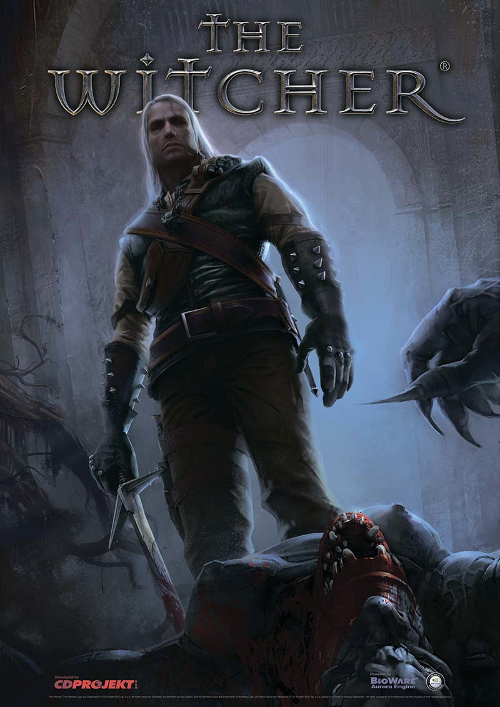
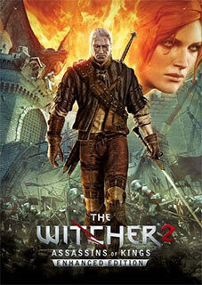
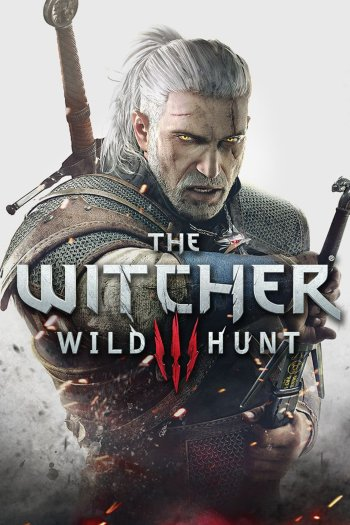
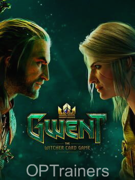

Vários jogos como God of War e Assassin’s Creed ganharam vídeos de conceitos feitos na Unreal Engine 5 recentemente. Agora, foi a vez de The Witcher, com a produção divulgada no canal CG Adventures que destaca as expressões faciais de personagens do game como Geralt, Triss, Yennifer e Olgierd. Para o visual, foi necessário usar a ferramenta Metahumans, recurso que torna possível fazer pessoas com um aspecto muito mais realista. Entretanto, ainda há algumas limitações com relação a cabelo, sobrancelhas, cicatrizes e olhos, de acordo com os criadores desse conceito, que teve como base o material de Witcher 3. Vale lembrar que o próximo jogo da franquia já entrou na fase de pré-produção, com a CD Projekt confirmando o uso da própria Unreal Engine 5 ao invés da REDengine, que foi usada pela desenvolvedora no jogo Cyberpunk 2077. A princípio, a ideia é iniciar uma nova saga após o fim da que foi apresentada no jogo anterior: The Witcher 3: Wild Hunt. Não há muitos detalhes divulgados pela empresa até agora a respeito do game, como quais serão as plataformas a contar com o título e como será a narrativa da aventura. Portanto, vale a pena ficar atento quanto às novas atualizações que podem surgir sobre o novo jogo da série Witcher.
No primeiro The Witcher, Geralt – que todos achavam estar morto – é achado por outros bruxos, mas com amnesia, sem lembrar nem de quem era nem como ainda estava vivo. Essa foi uma boa maneira que a CD Projekt encontrou de usar o icônico personagem e ainda expor os jogadores a esse novo mundo junto com Geralt. No decorrer do jogo, ele vai aos poucos recobrando a memória e lembrando das pessoas do passado, como a feiticeira Triss Merigold, que faz par romântico com o bruxo a partir de então. Já a trama principal é sobre Geralt em busca de segredos de mutação dos bruxos, que foram roubados por uma organização criminosa chamada Salamandra. A perseguição leva o Lobo Branco para a cidade de Vizima, a capital do reino de Temeria, onde a maior parte do jogo se passa. No final, Geralt descobre que a Salamandra estava trabalhando para Jacques de Aldersberg, grão mestre da Order of Flaming Roses (uma ordem militar claramente inspirada nos Cavaleiros Templários), que queria usar os segredos dos bruxos para criar um exército de seres mutantes. O bruxo derrota Aldersberg, ajuda a impedir um golpe de estado em Temeria e ainda salva a vida do rei.
The Witcher 2 se passa pouco tempo depois dos acontecimentos do primeiro jogo e Geralt agora é acusado de ter matado o rei Foltest de Temeria. Após escapar da prisão, o bruxo sai em busca do verdadeiro assassino para limpar seu nome. O jogo pode ter diferentes linhas narrativas dependendo das escolhas do jogador, mas algo que não muda é que Geralt acaba descobrindo uma grande conspiração para matar outros reis do Norte. A cena de abertura do segundo jogo, por sinal, mostra o assassinato do rei Demavend de Aedirn. O assassino é outro bruxo chamado Letho, que Geralt não reconhece por ainda não estar com sua memória totalmente recuperada. Já no encontro final entre os dois, Letho revela que estava trabalhando para o imperador de Nilfgaard, que queria a morte dos reis para desestabilizar os reinos e, mais uma vez, tentar invadir o norte. Com a memória totalmente recuperada e o nome limpo, Geralt fica sabendo que uma pessoa do seu passado e que ele achava estar morta, continua viva.
Baseado nos livros do escritor polonês Andrzej Sapkowski e produzido pela CD Projekt RED desde 2006, a série de videogames The Witcher ganhou muito espaço nos últimos anos e vem deixado muitas pessoas surpresas e ansiosas desde a revelação do último título da franquia, The Witcher 3: Wild Hunt. Tendo marcado e conquistado fãs por todas as partes do mundo, a série narra a história de Geralt de Rívia, um bruxo ou bruxeiro que sempre prefere por manter a neutralidade diante de escolhas e que possui o velho hábito do heroísmo, apesar de com ele vir seu preço. Como muitas pessoas das que estão interessadas nunca jogaram nenhum dos jogos anteriores ou leram os livros, estarei explicando alguns dos detalhes de localidades, personagens e o que você deve esperar em termos de história. E sim, como a série de jogos se passa após os livros, o texto entrega muito da história dos dois, então esteja avisado e prossiga com cautela.
Gwent: The Witcher Card Game é um jogo eletrônico free-to-play de cartas colecionáveis desenvolvido pela CD Projekt Red para as plataformas Android, IOS e Microsoft Windows.Gwent é derivado do minigame de cartas colecionáveis de mesmo nome que pode ser jogado dentro de The Witcher 3: Wild Hunt, jogo baseado na obra de Andrzej Sapkowski. O game foi anunciado no dia 13 de junho de 2016 durante a coletiva da Microsoft, conta com um sistema de Cross-play entre suas plataformas. A versão closed beta foi liberada no dia 25 de outubro de 2016, com acesso gradual à comunidade. Para participar dessa versão de testes, era necessário se inscrever no site oficial da companhia. Os sorteados recebiam um convite, com acesso integral ao jogo. O beta público foi liberado em maio de 2017, enquanto que a versão final somente foi lançada em outubro de 2018. O lançamento oficial, e consequentemente o fim do Beta, foi marcado por uma série de mudanças visuais e de jogabilidade que alteraram profundamente o jogo. A essa reestruturação deu-se o nome de Homecoming.